Candidate List 20251103Previous Day Next Day
Section 1: New Sources (age<1d) Section 2: Old (1-5d) sources observed last nightplaceholder
Section 1: New Afterglow/FBOT Cands Last Night (1)
1. ZTF25accpzjo (Afterglow?) [Back to Top] [Share] [Trigger Swift] [Fritz] [Lasair]RA, Dec: 146.83926, 16.12277 9h47m21.42s, 16d 7m21.96sGalactic (l, b): 217.64865, 46.0817 WARNING: 2.62 deg from ecliptic plane ext(g-r) = 0.048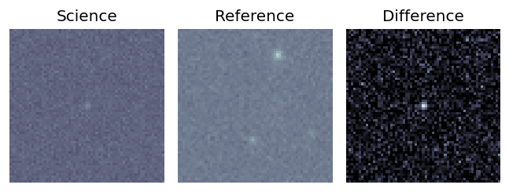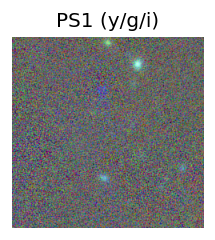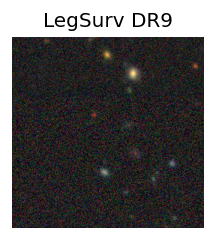
TESS: Sectors 45
PS1: 0 sources in 3 arcsec
LegacySurvey: 1 sources in 3 arcsec Closest: d = 7.72 arcsec, 288.6 deg (east of north) photoz=0.6 (68% bounds 0.33, 0.94), type=REX peak abs mag = -23.56 (68% bounds -22.04, -24.76)
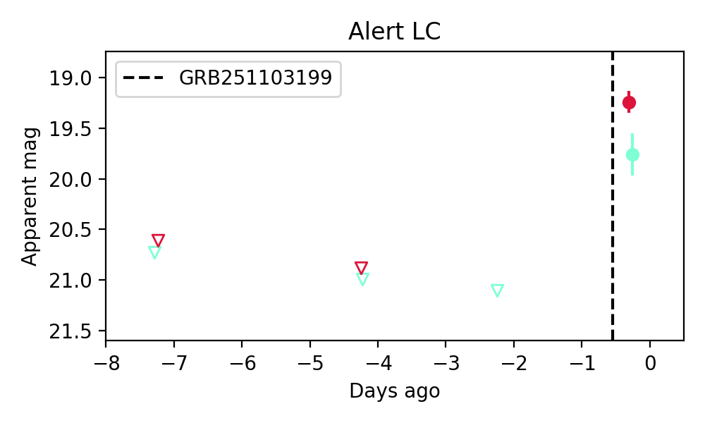
Extinction-corrected gr color:
From alerts: 0.47 +/- 0.23 mag
Consistent with synchrotron, g-r>0!
Rise Rate:
g: 0.67 mag/day
r: 0.42 mag/day
i: -99 mag/day
Fade Rate:
g: -99 mag/day
r: -99 mag/day
i: -99 mag/day
Section 2: Older Sources Observed Last Night (3)
0. ZTF25accnlys (FBOT?) [Back to Top] [Share] [Trigger Swift] [Fritz] [Lasair]RA, Dec: 239.2391, 18.93583 15h56m57.38s, 18d56m8.98sGalactic (l, b): 32.20067, 46.7797 ext(g-r) = 0.057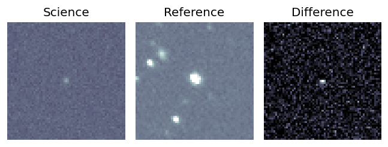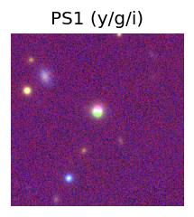
TESS: Sectors [ 24 25 51 78 117]
PS1: 0 sources in 3 arcsec
LegacySurvey: 1 sources in 3 arcsec Closest: d = 2.26 arcsec, 358.0 deg (east of north) photoz=0.23 (68% bounds 0.17, 0.24), type=PSF peak abs mag = -23.1 (68% bounds -22.45, -23.27)
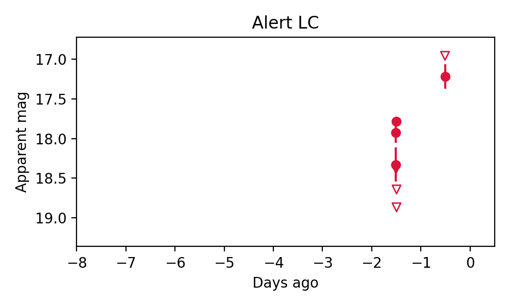
Rise Rate:
g: -99 mag/day
r: 1.65 mag/day
i: -99 mag/day
Fade Rate:
g: -99 mag/day
r: -99 mag/day
i: -99 mag/day
1. ZTF25accoast (Afterglow?FBOT?) [Back to Top] [Share] [Trigger Swift] [Fritz] [Lasair]RA, Dec: 269.89231, -16.99722 17h59m34.15s, -16d-59m-49.98sGalactic (l, b): 11.91687, 3.30711 ext(g-r) = 1.172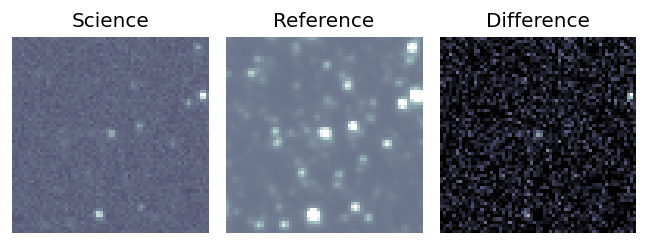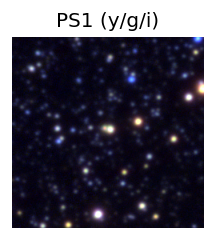
TESS: Sectors [ 91 92 115 116 118]
PS1: 1 source in 3 arcsec Closest: d = 0.65 arcsec photoz=0.07+/-0.00 peak abs mag = -23.00
LegacySurvey: 0 sources in 3 arcsec

Rise Rate:
g: -99 mag/day
r: 2.68 mag/day
i: -99 mag/day
Fade Rate:
g: -99 mag/day
r: 0.54 mag/day
i: -99 mag/day
2. ZTF25accqeyb (FBOT?) [Back to Top] [Share] [Trigger Swift] [Fritz] [Lasair]RA, Dec: 155.7044, 41.12984 10h22m49.06s, 41d 7m47.43sGalactic (l, b): 178.51694, 56.53355 ext(g-r) = 0.016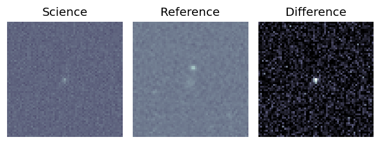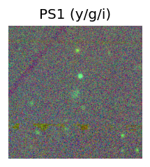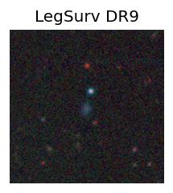
TESS: Sectors [21 48]
SDSS (10 arcsec):Found SDSS phot-z: z=0.28; peak abs mag = -21.18
PS1: 0 sources in 3 arcsec
LegacySurvey: 1 sources in 3 arcsec Closest: d = 1.32 arcsec, 169.2 deg (east of north) photoz=0.02 (68% bounds 0.01, 0.05), type=EXP peak abs mag = -15.5 (68% bounds -14.15, -17.16)
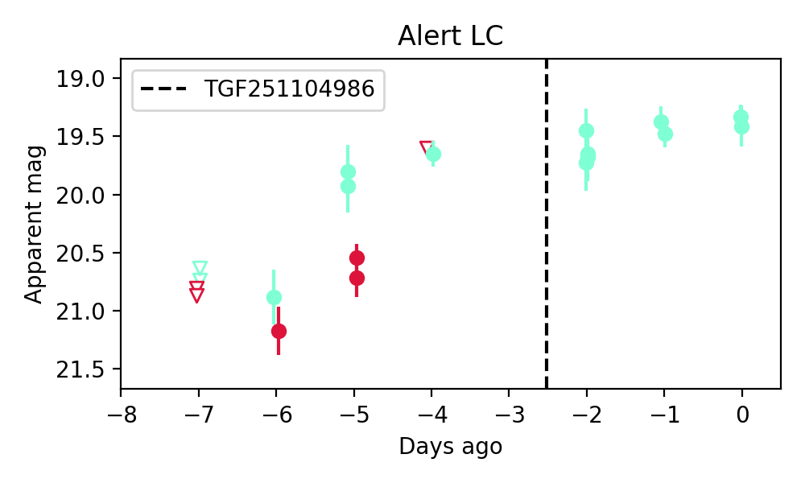
Extinction-corrected gr color:
From alerts: 0.06 +/- 99 mag
Rise Rate:
g: 0.5 mag/day
r: 0.6 mag/day
i: -99 mag/day
Fade Rate:
g: -99 mag/day
r: -99 mag/day
i: -99 mag/day